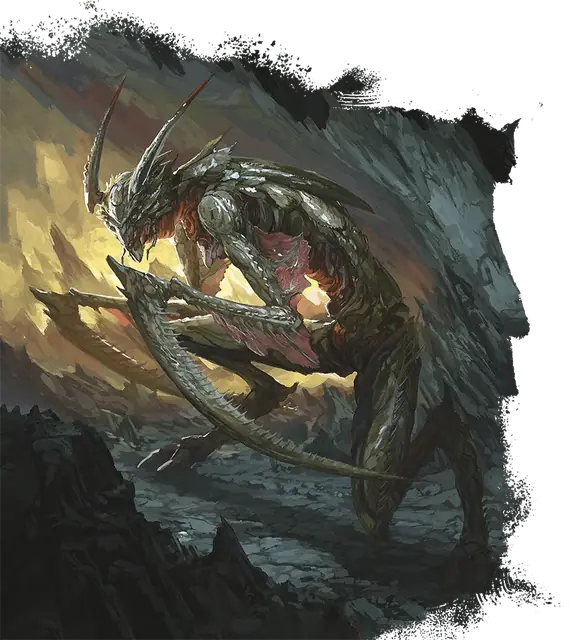

Абвеку
Abveku
Среднее Исчадие (Демон), Хаотичное Злое

Класс Защиты 17 Инициатива +11 (21)
Хиты 209 (22к8 + 110)
Скорость 40 футов
| мод | спас | ||
|---|---|---|---|
| СИЛ | 16 | +3 | +8 |
| ЛОВ | 22 | +6 | +11 |
| ТЕЛ | 20 | +5 | +5 |
| мод | спас | ||
|---|---|---|---|
| ИНТ | 17 | +3 | +8 |
| МДР | 18 | +4 | +9 |
| ХАР | 15 | +2 | +2 |
Сопротивление урону Огонь, Холод, Электричество
Иммунитеты Яд; Истощение, Отравленный
Чувства пассивное Восприятие 19, Истинное зрение 120 футов
Языки Бездны, Телепатия 120 фт.
Опасность 14 (11 500 опыта; БВ +5)
Особенности
Восстановление исчадия. Когда абвеку умирает за пределами Бездны, его тело растворяется в ихоре и в тот же миг заново возрождается со всеми Хитами где-то в Бездне.
Сопротивление магии. Абвеку совершает с Преимуществом спасброски от заклинаний и прочих магических эффектов.
Действия
Мультиатака. Абвеку совершает четыре атаки Секущими когтями и использует Гипнотический танец, если тот доступен.
Секущие когти. Бросок рукопашной атаки: +11, досягаемость 10 фт. Попадание: 19 (3к8 + 6) Рубящего урона.
Гипнотический танец (Перезарядка 5–6). Спасбросок Мудрости: Сл 18, все существа в 20-футовой Эманации, исходящей от абвеку. Провал: Цель Парализована и повторяет спасбросок в конце каждого своего хода, при успехе оканчивая на себе этот эффект. Через 1 минуту она преуспевает автоматически.
Бонусные действия
Скрытность в тени. Абвеку совершает действие Затаивание, если находится в области Тусклого света или Темноты.
Реакции
Парирование. Условие: По абвеку попадает бросок рукопашной атакой. Эффект: Абвеку получает бонус +5 к КЗ против этой атаки, что может привести к её промаху.
Бонус мастерства +5
Среда обитания Бездна
Сокровища Отсутствуют
Абвеку
Демон подлых убийств
Абвеку — это демоны, что повоплощают садистский профессионализм наёмных убийц. Терпеливые ассасины, они предпочитают издалека выслеживать цель, прежде чем нанести удар. Этими целями могут быть как враги самих абвеку, так и враги демонических владык или могущественных злодеев, которым те служат.
Абвеку — двуногие насекомоподобные демоны, чьи руки оканчиваются когтями в форме кос. Они гордятся своими убийствами и порой носят на себе или как-то ещё выставляют напоказ жуткие трофеи, снятые с тел жертв.